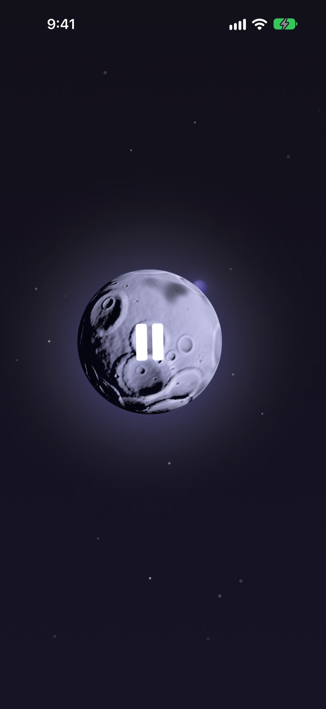
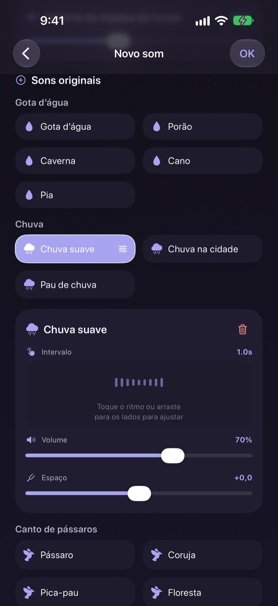
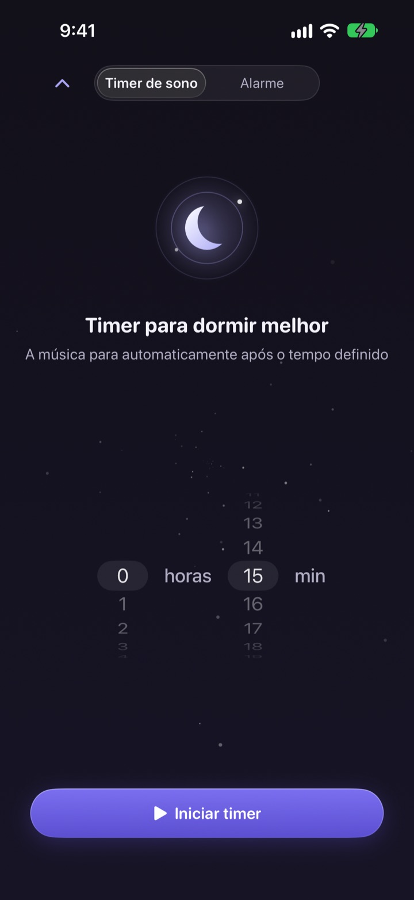
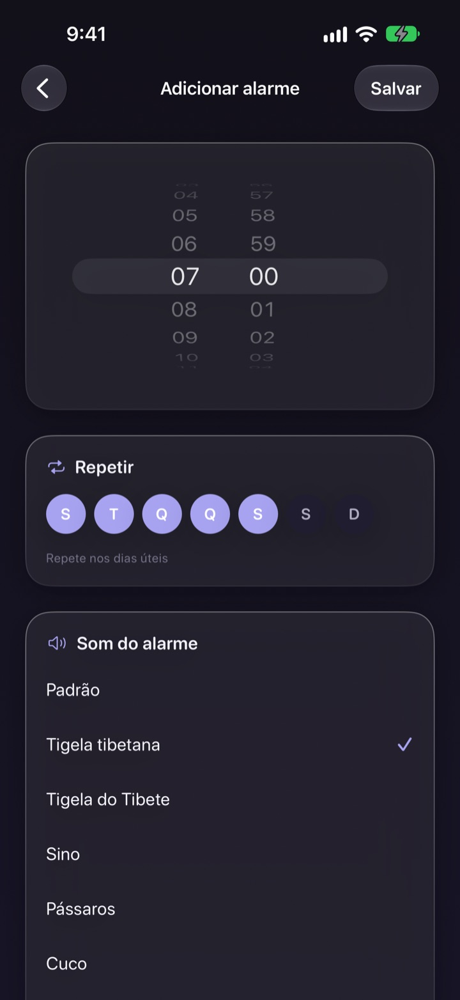
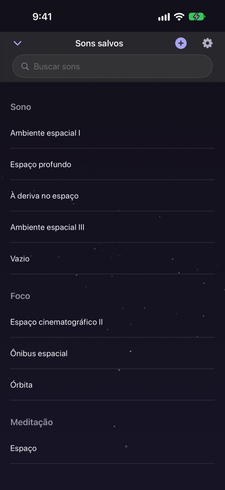

Pare de passar a noite
procurando o som certo
Misture uma vez chuva, gotas d’água e uma tigela tibetana num som só seu. Da noite seguinte em diante, é só tocar na lua.
Todos os sons podem ser ouvidos de graça. Para iPhone e iPad.

Já perdeu uma hora procurando algo para pegar no sono?
A chuva é monótona demais, as ondas são altas demais e o vídeo que você coloca para no meio da noite com um anúncio. No Dalbit você mesmo sobrepõe os sons que curte até chegar no que combina com você, e guarda tudo atrás de uma única lua.
Monte seu som em camadas
Empilhe chuva, gotas d’água, canto de pássaros e tigelas tibetanas. Ajuste em cada camada o volume, a frequência e de onde ela soa, e coloque ondas ou piano como música de fundo.
Dê um nome à mistura, salve e volte a ela em qualquer noite.

Desliga sem te acordar
O timer de sono nunca corta o som de repente: ele vai abaixando devagar para que o fim não te acorde.
O som continua com a tela apagada ou em outro app, e se você deixar quieto a tela escurece sozinha.

De manhã, um despertar suave
Crie alarmes com tigela cantante, tigela tibetana, canto de pássaros ou cuco, e repita nos dias da semana que quiser.

Uma lua para tudo
Toque na lua para tocar e de novo para pausar. Deslize para o lado para trocar de som, para cima para o timer de sono e para baixo para os sons salvos.
Curtiu um som? Toque e segure a lua para adicionar aos favoritos.

Comece em três passos
- 1
Toque na lua
Abra o app, toque na lua e o som começa na hora.
- 2
Deslize para o lado
Vá passando até achar um som que te agrade.
- 3
Ajuste o timer e deite
Deslize para cima, escolha um tempo e depois o som some aos poucos.
O que a lua faz
- Tocar
- tocar, pausar
- Deslizar para o lado
- próximo som
- Deslizar para cima
- timer de sono e alarmes
- Deslizar para baixo
- sons salvos
- Tocar e segurar
- adicionar aos favoritos
Você também pode pausar e retomar pelos controles de reprodução da tela bloqueada.
Ouvir é grátis. O Premium é para criar mais.
Grátis
- Todos os sons
- Misturar sons em camadas
- Salvar até três misturas
- Timer de sono que vai sumindo
- Alarmes com sons suaves
- Favoritos
Dalbit Premium
- Crie e salve quantas misturas quiser
Assinatura mensal com renovação automática e teste grátis
A assinatura é renovada automaticamente, a menos que seja cancelada pelo menos 24 horas antes do fim do período atual, e a cobrança começa ao fim do teste grátis. Valem os termos de uso padrão da Apple (EULA).
Perguntas frequentes
Como toco e troco os sons?
Toque na lua da tela inicial para tocar e de novo para parar. Deslize para o lado para outro som, para cima para o timer de sono e para baixo para a sua biblioteca.
O som para se a tela apagar?
Não. Ele continua com a tela apagada ou em outro app. Para parar, toque de novo na lua ou use os controles da tela bloqueada.
O que acontece quando o timer acaba?
O som não corta de repente: vai ficando mais baixo e depois para, para não te acordar.
O alarme não toca.
Ao criar o primeiro alarme, o app pede permissão. Confira se ela está ativada em Ajustes > Dalbit.
Onde ficam salvas as minhas misturas?
Misturas, alarmes e ajustes ficam só neste aparelho. Se você apagar o app, eles são apagados junto.
O que dá para usar de graça?
Todos os sons, a mistura em camadas e até três misturas suas. O timer de sono e os alarmes também são grátis. O Premium tira o limite de misturas.
Como cancelo a assinatura?
Vá em Ajustes > Conta Apple > Assinaturas, escolha o Dalbit e cancele. Se não cancelar pelo menos 24 horas antes do fim do período atual, ela renova automaticamente.
Troquei de celular e perdi a assinatura.
Entre com a mesma Conta Apple, abra a tela de assinatura do Dalbit e toque em Restaurar compras.
Como relato um bug ou sugiro um recurso?
Use o envio de feedback nos ajustes do app ou escreva para o endereço abaixo. Costumamos responder em poucos dias.
Dúvidas ou ideias? Escreva para mizzking75@gmail.com.